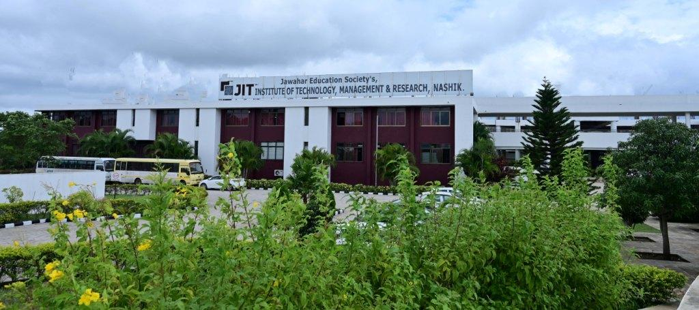

About JIT
Institutional Legacy
"Engineering precision meets academic excellence. JIT stands as a beacon of technical innovation in the heart of Nashik."
Jawahar Education Society's Management, Technical & Research Campus, popularly known as JIT Nashik, was established in 2008 with a vision to provide quality technical education to students across various socio-economic backgrounds.

Spread across a lush 25-acre campus, JIT offers a vibrant ecosystem for learning and growth. Our infrastructure includes modern laboratories, a digital library, and smart classrooms designed to foster innovation.
We are affiliated with Savitribai Phule Pune University and approved by AICTE, ensuring that our curriculum meets the highest standards of technical education.
Vision
To be a center of excellence in engineering and technology by providing high-quality education and research environment to create talented professionals.
Mission
- To offer world-class undergraduate and postgraduate programs in engineering.
- To foster innovation and original research among faculty and students.
- To bridge the gap between industry and academia through sustained interaction.